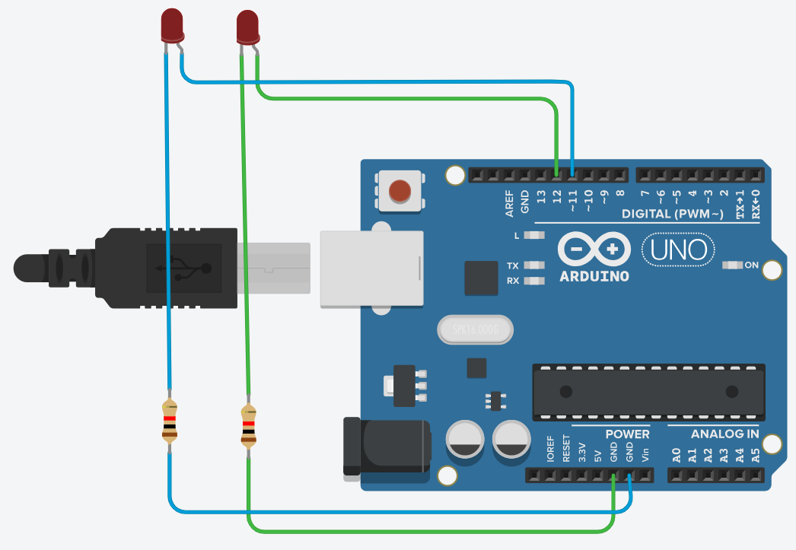
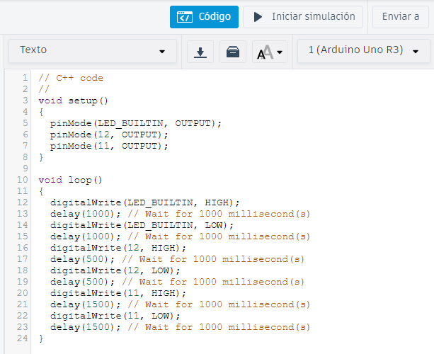

3. Semana 2
09/08/2023
HardWare para IoT
¿Qué herramientas se usan en el IoT?
- Sensores
- Actuadores
- Tarjetas de desarrollo, las cuales a su vez contienen microcontroladores y microprocesadores. Esto permite el control de sensores y actuadores mediante programación.
- Gestión de la conectividad mediante protocolos estandarizados como MQTT y HTTP, para asegurar que la información llegue a la nube de manera segura.
- Interfaz gráfica: comunica al usuario final la información entre los dispositivos (cosas) y la nube. Para ello, se utilizan aplicaciones de desarrollo alojadas en la nube.
Para entender estos componentes, inicialmente se hizo uso de Tinkercad, donde se permite simular tarjetas Arduino UNO, para así explicar un poco de la programación de estas y el entendimiento entre sensores digitales y analógicos.
Ejercicios Tinkercad
Ejercicio 1.
Encender dos LED alternandolos:
- Crear un sketch de un circuito.
- Arrastrar al WorkSpace un Arduino, dos LED y dos resistencias.
- Conectar cada uno de los LED asignándole a cada uno un pin en el Arduino y la otra parte a una resistencia.
- Conectar la resistencia al Ground del Arduino. Debería verse: 
- Con el montaje listo, ir al sector de código y cambiarlo de Bloques a Texto.
- En el Setup, usando la función pinMode, asignarle a los LED el pin en el cual están conectados. (Incluir el LED propio del Arduino, LED_BUILTIN).
- En el Loop, usando la función digitalWrite, encendemos o apagamos los LED y con delay agregamos un tiempo entre los pasos que va ejecutando Arduino. De esta forma, programamos un código que enciende un LED durante un segundo (1 seg), lo apaga, espera un segundo (1 seg), enciende el siguiente LED durante medio segundo (0.5 seg), lo apaga, espera otro medio segundo y finalmente enciende el LED restante durante un segundo y medio (1.5 seg), lo apaga y permanece apagado todo por otro segundo y medio (1.5 seg). Nota: Recuerda que el delay se mide en milisegundos (1/1000 seg), por lo que un segundo sería delay(1000);. 
- Correr la simulación.